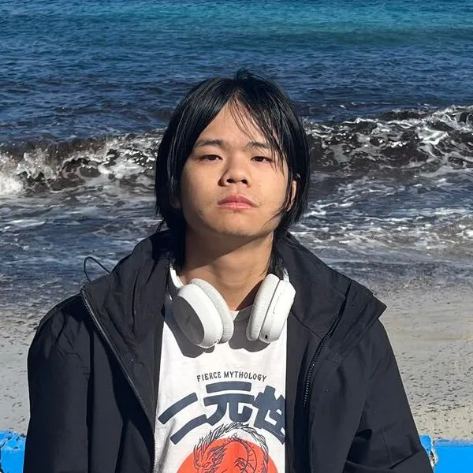
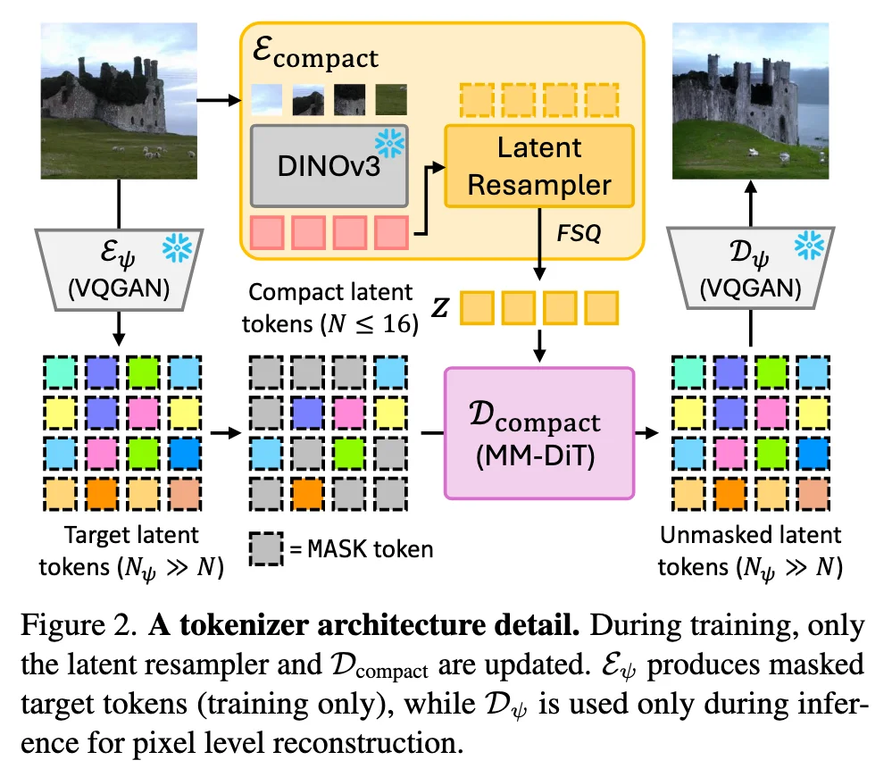
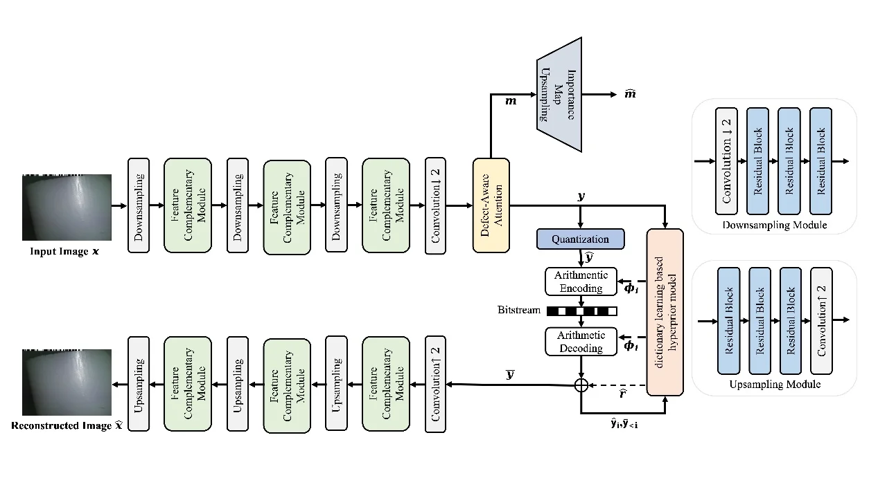
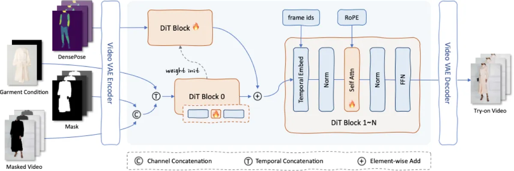

我关注生成式 AI、计算机视觉与图像压缩，希望把科研中的建模能力、工程中的落地经验，转化为稳定可用的产品能力。

个人概览
AI · CV · Compression
语言能力
校园组织
用一维 Tokens 保留语义，再用生成模型恢复细节
研究目标是将图像压缩成极低码率的离散表示，让 Token 承载高层语义，再借助 Stable Diffusion 等生成式模型恢复纹理与细节。
过程中调研并比较 VQVAE、RVQ、FSQ 等量化编码器，同时结合 HyperPrior 与熵编码，探索“压得足够小”和“还原得足够好”之间的平衡。全流程 pipeline 由我自己搭建，包括模型训练、压缩实验和结果对比。

用混合视觉模型识别电缆表面缺陷
这项研究面向电缆缺陷检测场景，探索将 Mamba 的长序列建模能力与 Transformer 的全局注意力机制结合，用于捕捉电缆图像中的局部纹理异常和全局结构信息。
我关注模型结构设计、特征提取模块组合与检测效果验证，希望在工业视觉场景中兼顾缺陷识别准确性、推理效率和模型可解释性。

算法实习生
北京零一智能科技有限公司
构建基于 Banana 2 的图像换装与镂空图生成提示词系统。
基于 Wan2.2 搭建 ComfyUI 视频换装工作流。
基于 CatV2TON 搭建 ComfyUI 视频换装工作流。
研究性实习生
Groupe Bouygues · 法国巴黎
参与工地安全识别项目，整理风险场景并完成视频数据处理。
使用 YOLOv5s-pose 提取人体姿态，再用 Transformer 做时序分类。
结合 Arduino 和 ESP32-CAM 完成可演示的硬件验证。
研究性实习生
LamCube
完成建筑裂缝检测实验，使用 Deeplabv3+ 做语义分割。
实现 YOLO 车道线、行人和车标检测，并接入自动驾驶小车验证。
Banana 2 提示词系统 + Wan2.2 / CatV2TON 双 ComfyUI 换装工作流
第一阶段：构建基于 Banana 2 的图像换装与镂空图生成提示词系统，面向不同服饰类型、材质和摆放方式，沉淀可复用的提示词模板与生成检查标准。
第二阶段：基于 Wan2.2 搭建 ComfyUI 视频换装工作流，完成节点编排、输入输出链路整理和批量生成验证。
第三阶段：基于 CatV2TON 搭建 ComfyUI 视频换装工作流，围绕人物姿态、服装条件、遮罩视频和时序一致性，整理可用于试穿效果验证的生成流程。
